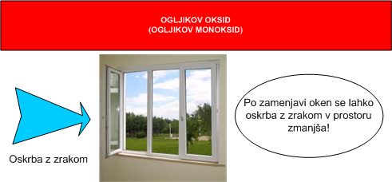

OGLJIKOV MONOKSID V DOMAČEM OKOLJU
POSEBNO NEVARNOST PREDSTAVLJA V DOMAČEM OKOLJU TUDI POJAV OGLJIKOVEGA MONOKSIDA. TA SE POJAVLJA PRI NEPOPOLNEM GORENJU V PEČEH,KJER ZGOREVAJO TRDNA, PLINASTA ALI TEKOČA GORIVA. PRAV TAKO SE OGLJIKOV MONOKSID POJAVLJA MED ZGOREVANJEM ZEMELJSKEGA PLINA V PLINSKIH BOJLERJIH.
OGLJIKOV OKSID (ALI PO STAREM OGLJIKOV MONOKSID) S KEMIJSKO FORMULO CO JE PLIN BREZ BARVE, VONJA IN OKUSA. JE GORLJIV IN TOKSIČEN.
TO ENOSTAVNO POMENI, DA GA S ČLOVEŠKIMI ČUTILI NE MOREMO VIDETI, OKUSITI ALI VONJATI!
MED DELOVANJEM PEČI, BOJLERJEV ALI VOZIL LAHKO TOREJ VREDNOSTI CO PRESEGAJO TISTE, DOLOČENE S STANDARDI O VARNOSTI UPORABNIKOV.
V PROSTORU PRIDE V NAJVEČ PRIMERIH DO NASTANKA PREVELIKIH KONCENTRACIJ CO ZARADI:
- SLABEGA ODVAJANJA ZGOREVALNIH PRODUKTOV (NEOČIŠČENI ALI SLABO OČIŠČENI DIMNIKI)
- NAPAČNO IZVEDENIH ALI POŠKODOVANIH DIMNIŠKIH TULJAV (TULJAVE SO POČENE ALI ZARADI NAPAKE PRI IZVEDBI ALI VZDRŽEVANJU PUŠČAJO DIMNE PLINE)
- NEUSTREZNEGA PREZRAČEVANJA OZ. OSKRBE S SVEŽIM ZRAKOM V PROSTOR, KJER SE NAHAJA PEČ NA TRDNO, TEKOČE ALI PLINASTO GORIVO ALI PLINSKI BOJLER (OSKRBA KURILNIH NAPRAV Z ZGOREVALNIM ZRAKOM). DO NEUSTREZNEGA PREZRAČEVANJA PRIDE LAHKO ZARADI NAPAK PRI NAČRTOVANJU ALI IZVEDBI PREZRAČEVANJA V PROSTORIH OZ. NAKNADNEGA POSEGA V PROSTOR (ZAMENJAVA OKEN IN VRAT Z NOVIMI OKNI IN VRATI, KI OBIČAJNO TESNIJO BOLJE OD STARIH)
- UPORABE STROJEV IN NAPRAV, KI JIH POGANJAJO MOTORJI Z NOTRANJIM ZGOREVANJEM (MOTORNE ČRPALKE, MOTORNE ŽAGE, AGREGATI IPD.) V ZAPRTEM PROSTORU
OSNOVNI PREVENTIVNI UKREPI, KI JIH JE TREBA KOT ZAŠČITO PRED PREKOMERNIM NASTAJANJEM OGLJIKOVEGA OKSIDA, IZVESTI V STANOVANJU:
- REDNI PREGLEDI IN ČIŠČENJE DIMOVODNIH NAPRAV
- REDNI PREGLEDI IN ČIŠČENJE ZRAČNIKOV
- ZAGOTOVITI JE TREBA USTREZNO PREZRAČEVANJE OZ. DOVOD ZRAKA ZA ZGOREVANJE KURILNE NAPRAVE OZ. PLINSKEGA BOJLERJA. ZUNANJA NOVA OKNA S TESNILI NE USTREZAJO ZADOSTNEM PREZRAČEVANJU OZ. OSKRBI Z ZRAKOM
- V ZAPRTIH PROSTORIH SE NE SME UPORABLJATI NAPRAV, KI JIH POGANJAJO MOTORJI Z NOTRANJIM ZGOREVANJEM (MOTORNE ŽAGE, AGREGATI IPD.)
- OB ZAGONU MOTORJEV VOZIL Z NOTRANJIM ZGOREVANJEM V GARAŽI, NAJ BODO GARAŽNA VRATA ODPRTA (VSA VRATA, KI VODIJO IZ GARAŽE V STANOVANJE MORAJO BITI OB ZAGONU MOTORJA VOZILA ZAPRTA).
- PREVENTIVNO SE LAHKO V BIVALNE PROSTORE NAMESTI JAVLJALNIKE OGLJIKOVEGA OKSIDA (CO JAVLJALNIKI). JAVLJALNIKI NAJ SE NAMESTIJO ČIM BLIŽJE VIŠINI GLAVE OSEB, KI BIVAJO V PROSTORU. TAKO NAJ SE V SPALNICAH ALI OTROŠKIH SOBAH JAVLJALNIKE OGLJIKOVEGA OKSIDA NAMESTI V VIŠINO GLAVE NA STENO POLEG POSTELJE. NAMESTITEV JAVLJALNIKA CO NAJ SLUŽI KOT SEKUNDARNI PREVENTIVNI UKREP, KO SO BILI PREDHODNO ŽE IZVEDENI PREJ NAŠTETI PREVENTIVNI UKREPI.

SLIKA 8: PREZRAČEVANJE